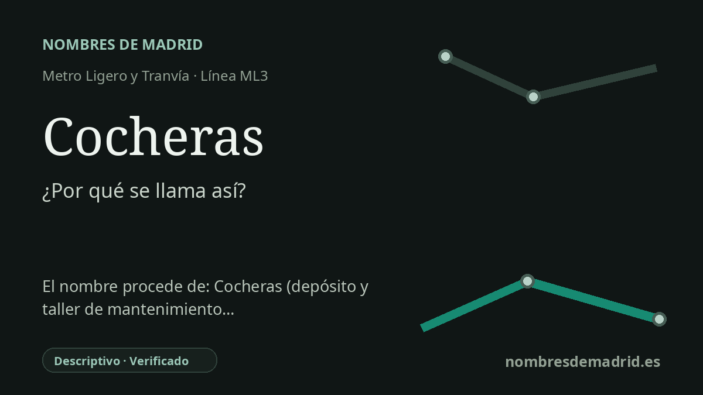

Publicado el · Investigación de Nombres de Madrid · Cómo verificamos cada origen · 7 fuentes consultadas
Respuesta rápida
Cocheras recibe su nombre de las cocheras y oficinas de Metro Ligero Oeste situadas junto a la parada de la ML3 en la calle Edgar Neville. La palabra designa un garaje o depósito de vehículos y aquí alude directamente a la base de mantenimiento del metro ligero.
La historia del nombre
Cocheras tiene uno de los nombres más literales del plano del metro ligero madrileño. Metro Ligero Oeste la describe como una parada de la ML3 situada en la calle Edgar Neville y como la estación más cercana a las cocheras y oficinas de la empresa. Es decir, la parada toma su nombre de la instalación ferroviaria de trabajo que tiene al lado.
En español, una cochera es un garaje, depósito o lugar destinado a guardar vehículos. En el uso ferroviario y tranviario, cocheras suele designar los edificios y vías donde se estaciona, limpia, inspecciona y repara el material móvil. La propia Metro Ligero Oeste presenta sus cocheras no solo como lugar de descanso de los vehículos tras el servicio, sino como centro de mantenimiento equipado para cuidar la flota.
La parada pertenece a la ML3, la línea de metro ligero entre Colonia Jardín y Puerta de Boadilla. Metro Ligero Oeste indica que explota la concesión de las líneas ML2 y ML3 desde julio de 2007, y la documentación oficial y de la operadora da el 27 de julio de 2007 como fecha de inauguración de MLO. El sistema moderno de metro ligero madrileño había empezado a regresar unas semanas antes, después de que la antigua red tranviaria desapareciera en 1972.
El nombre enlaza también con un vocabulario histórico del transporte. La RAE da coche como palabra procedente del húngaro kocsi, originalmente 'carruaje', y aún recoge sentidos como automóvil, carruaje de tracción animal y vagón de tren o metro. Cocheras conserva así tanto el sentido actual de depósito como la vieja familia léxica de coche vinculada al carruaje y al ferrocarril.
No hay una teoría alternativa sólida para este nombre de estación. La evidencia apunta a un origen descriptivo directo: es la parada que da servicio a las cocheras y oficinas de MLO. El contexto histórico debe formularse con precisión: la red histórica de tranvías de Madrid alcanzó 188 km en 1954 y su última línea cerró el 2 de junio de 1972, mientras que la etapa moderna del metro ligero comenzó en 2007.